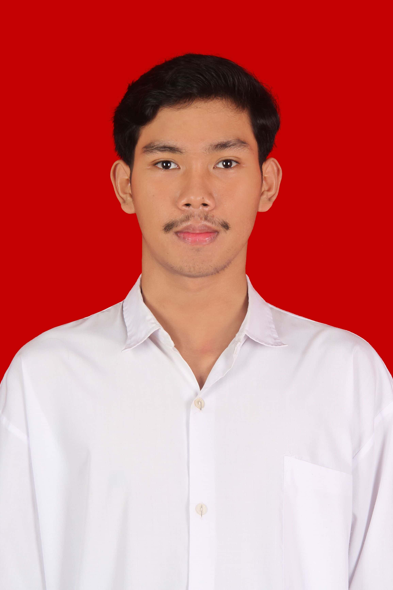

Pendidikan
- GelarS1 Teknik Informatika
- UniversitasUNP Kediri
- IPK 3.61 / 4.00
Terbuka untuk peluang kolaborasi
Data Analyst & Web Developer
Lulusan S1 Teknik Informatika Universitas Nusantara PGRI Kediri dengan IPK 3.61. Berpengalaman dalam pengembangan web, pemeriksaan data internal, pemrosesan citra digital, dan pemodelan Deep Learning. Siap memberikan solusi berbasis teknologi melalui pendekatan analitis dan sistematis.

Foto Profil
Tentang Saya
Saya Muhammad Fernanda Mulya Putra, lulusan S1 Teknik Informatika dari Universitas Nusantara PGRI Kediri dengan IPK 3,61. Memiliki keahlian dalam pengembangan web, pemeriksaan data, pengolahan citra digital (Image Processing), serta pemodelan Deep Learning. Berpengalaman sebagai Web Developer di UMKM dan Staff Pemeriksa Internal, serta terbiasa bekerja secara teliti, sistematis, dan berorientasi pada target. Didukung kemampuan pemecahan masalah (problem solving) dan komunikasi yang baik, saya siap berkontribusi secara aktif dalam proyek berbasis teknologi dan analisis data untuk mendukung pencapaian tujuan industri.
Staf Pemeriksa Internal
Saxo Cell — audit & verifikasi operasional
Web Developer
Proyek UMKM — pengembangan website bisnis lokal
Berdomisili di Kediri, Jawa Timur, Indonesia. Terbuka untuk kerja remote maupun kolaborasi lintas kota.
Available for work
Project Showcase
Kumpulan proyek dari riset machine learning hingga pengembangan web masing-masing lahir dari masalah nyata dan diselesaikan dengan pendekatan terstruktur.
01 · Deep Learning / Computer Vision
Proyek penelitian tugas akhir untuk mendeteksi dan mengklasifikasikan penyakit daun tebu menggunakan computer vision dan transfer learning.
Python · TensorFlow/Keras · MobileNetV2 · OpenCV
02 · Deep Learning / Email Security
Sistem web Streamlit terintegrasi IMAP untuk memantau email masuk dan mengklasifikasikannya sebagai spam atau non-spam secara otomatis.
Python · Streamlit · BiLSTM · TensorFlow/Keras · IMAP
03 · Web Development / Digitalisasi UMKM
Website yang dirancang dan dikembangkan secara mandiri untuk menampilkan profil usaha, katalog produk, dan kanal komunikasi pelanggan secara online.
HTML · CSS · JavaScript · Tailwind CSS · Canva
04 · Natural Language Processing
Aplikasi Streamlit untuk mengklasifikasikan ulasan pengguna eFootball menjadi sentimen positif atau negatif, sekaligus menampilkan tahapan pemrosesan teks NLP.
Python · Streamlit · TF-IDF · Multinomial Naive Bayes · Sastrawi
05 · Natural Language Processing
Chatbot interaktif berbasis terminal yang mencocokkan pertanyaan pengguna dengan basis pengetahuan untuk memberikan jawaban yang relevan.
Python · Scikit-learn · TF-IDF · Cosine Similarity · NumPy
Tech Stack
Sertifikasi
Sertifikasi formal sebagai bukti komitmen terhadap pengembangan kompetensi berkelanjutan.
Sertifikasi kompetensi aplikasi perkantoran: pengolahan dokumen, spreadsheet, dan presentasi tingkat lanjut.
Sertifikasi kecakapan Bahasa Inggris — listening, structure, dan reading comprehension.
Dasar-dasar pengembangan frontend: HTML, CSS, JavaScript, dan prinsip desain antarmuka responsif.
Organisasi Masyarakat
Aktif berkontribusi dalam organisasi masyarakat melalui koordinasi, kerja sama tim, dan pelaksanaan kegiatan sosial.
Anggota Divisi / Pengurus
September 2025 – Sekarang
Kontak
Punya ide proyek, peluang kerja, atau sekadar ingin berdiskusi soal data dan web? Jangan ragu untuk menghubungi saya selalu terbuka untuk percakapan baru.